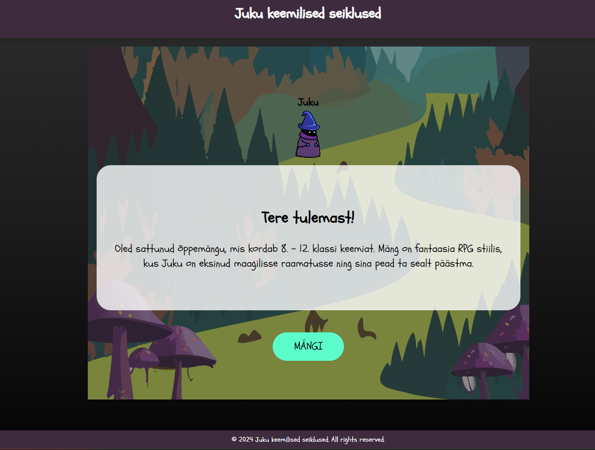

Häkatoni PROJEKT
Aora on videote jagamise rakendus, mille arendasin õpetust järgides alusprojektina.
Rakenduse eesmärk on pakkuda kasutajatele kaasahaaravat platvormi sisselogimiseks, populaarsust koguvate videote uurimiseks, oma meedia üleslaadimiseks ja interaktiivse kogemuse nautimiseks.
Rakenduse loomisel kasutati selliseid tehnoloogiaid nagu Expo, React Native ja Appwrite. See projekt võimaldas mul sukelduda mobiilirakenduste arendamise põhiaspektidesse alates kasutajaliidese disainist kuni taustaprogrammi integreerimiseni.
Saate vaadata projekti juhendit SIIT

